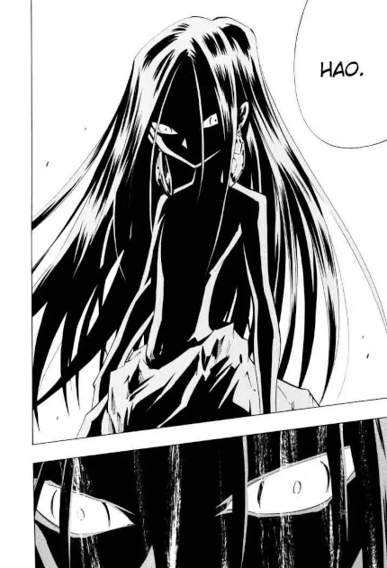

O grande vilão de Shaman King: Asakura Hao
Publicado entre 1998 e 2004 pela editora Shueisha, Shaman King é um mangá escrito e ilustrado por Hiroyuki Takei. A série conta a história de Yoh Asakura, um garoto xamã que treina para desenvolver suas habilidades a fim de ganhar o Torneio Xamã e se tornar o Rei Xamã. O mangá conta com 285 capítulos compilados em 32 tankōbon. Shaman king também ganhou uma série televisiva que foi originalmente exibida pela TV Tokyo entre 4 de julho de 2001 e 25 de setembro de 2002.
No Japão, Shaman King foi uma série popular. O mangá original vendeu cerca de 26 milhões de cópias, tornando a série uma das mais vendidas de todos os tempos da Weekly Shōnen Jump, enquanto o anime esteve entre os dez mais assistidos da semana por diversas vezes. Os críticos da área tem provido comentários positivos em relação a série.
Quem é Hao Asakura
Asakura Hao é o homem que roubou o espírito do fogo para conseguir se tornar o próximo rei xamã. Após morrer e reencarnar como o irmão gêmeo de Asakura Yoh, o protagonista do anime, Hao já nasce com habilidade de invocar o espírito do fogo para conseguir evitar seu assassinato por parte da família Asakura que já esperava a sua chegada.
Anos se passam, e Hao viaja pelo mundo atrás de pessoas que apoiem seu plano de exterminar a humanidade que foi tão cruel com ele no passado. Seguindo se caminho ganhando inimigos e aliados, Hao participa do tornei xamã e vira um alvo de ódio e medo.
Embora práticamente todos os participantes lutem para impedir que Hao se torne o próximo rei xamã, a sua força é assustadora, seus planos precisos e sua vitória se torna inevitável. No final, Hao atinge seu objetivo de se tonar 1 com o grande espírito.